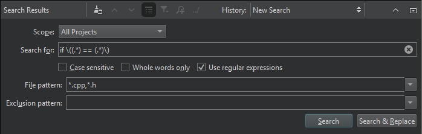

Search and replace using a regular expression
Search and replace across files using regular expressions in the Search Results view.
Regular expressions used in Qt Creator are modeled on Perl regular expressions. For more information about using regular expressions, see QRegularExpression.
For example, to replace equality checks (foo == bar) with a function (foo.equals(bar)):
- Commit your changes to version control, as you cannot undo the replace action.
- Press Ctrl+Shift+F or go to Edit > Find/Replace > Advanced Find > Open Advanced Find to open Search Results.

- In Scope, select whatever is appropriate for your search.
- Select Use regular expressions.
- Enter the following text in Search for:
if \((.*) == (.*)\)
- Select Search & Replace to see a list of search results.

- In Replace with, enter the following text:
if (\1.strictlyEquals(\2))
- Select Replace to replace all instances of the text.
See also How To: Edit Code, How To: Search, and Edit Mode.